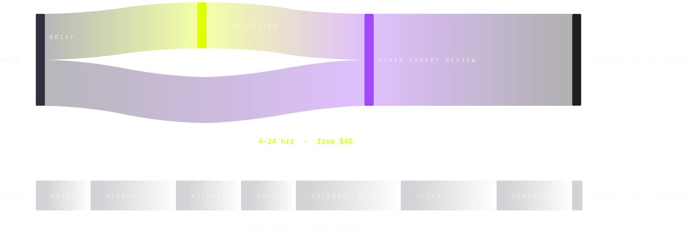

THE PROCESS
Brief in
Business-ready output out.
Here's exactly what happens between the two.
STEP BY STEP
What happens from the moment you submit a brief

01
You submit a brief
The guided brief wizard walks you through eight questions that determine output quality: what you need, who it's for, tone, format, deadline, brand context, key messages, and reference examples. Most people finish in under ten minutes.
Brief anxiety — the fear of not knowing how to explain what you need — is the most common reason people avoid using services like this. The wizard eliminates that. It asks exactly what the expert needs, and nothing more.
02
The estimator runs
As you complete the brief, cost is calculated in real time. You see the full estimate — Kojo cost, USD equivalent, agency equivalent, and delivery window — before you approve anything. Nothing begins until you approve.
03
AI drafts
Your brief is processed against your stored brand context, previous outputs, and domain requirements. The AI produces a structured first draft designed for expert review — not for direct publication. The draft is not sent to you.
04
Expert reviews
A subject matter expert — matched by domain specialism, not availability — reviews every section. They correct factual errors, align to your brand voice, verify claims, check formatting, and approve the final output. The AI percentage for this brief is logged and shown in your delivery receipt.
05
You receive the deliverable
Business-ready output delivered to your inbox. Formatted to spec. Your delivery receipt shows: what was produced, who reviewed it, time elapsed, AI/human split, and agency equivalent cost and time. No chasing. No editing. Done.
THE BRIEF
The brief that determines output quality
Eight questions. Each maps to a specific quality variable in the output.
1. What do you need?
— Determines service category and expert type.
2. Who is it for?
— Audience specificity is the biggest driver of output relevance.
3. What tone?
— Your stored brand voice pre-populates. Confirm or adjust.
4. What format?
— A board memo and an investor update require different structures.
5. What's the deadline?
— Determines standard vs. express routing.
6. What key messages must be included?
— Non-negotiables. Expert review confirms each appears.
7. What should it not say or do?
— Guardrails are as important as direction.
8. Are there examples to reference?
— Optional. Informs the expert's quality calibration.
Most brief anxiety is about getting it wrong. The wizard makes that impossible — if a question is unclear, the expert resolves it, not you.
THE STANDARD
Not a draft. Not a starting point. The finished thing.
Business-ready means the deliverable meets the standard required for external use — without further editing.
Board memo
- Financial narrative internally consistent
- Structure matches what your investors expect
- Executive summary stands alone
- Formatted and ready to attach
Competitive landscape
- Named competitors with sourced intelligence
- Specific claims with references cited
- Analyst-grade formatting
- Summary your board can read in 3 minutes
Email campaign
- Subject lines written to be testable
- Body copy on-brand throughout
- CTAs specific and action-oriented
- Sequence structure logical from awareness to action
86% of marketers edit AI-generated content before publishing (AllAboutAI, 2025). At Kojo, that editing happens before the output reaches you — it is not your job.
THE HUMAN LAYER
The human layer is the product, not a feature
Built on EZ Works' seven-year delivery infrastructure — 1,000+ subject matter experts across five continents, 70+ service categories, serving McKinsey and BCG-calibre client standards. Kojo is the startup-market product of that infrastructure.
Who reviews your brief
Every brief routes to a subject matter expert by specialism. A financial communications brief routes to someone who has written board memos and investor materials. A competitive intelligence brief routes to an analyst trained in structured intelligence frameworks. Routing is based on brief type and complexity — not on who is available.
What the expert does
The expert does not write from scratch. They review the AI draft against your brief, correct any section that does not meet standard, verify factual claims, align to your brand voice, and approve the final deliverable. This review — typically 20–90 minutes depending on complexity — is what creates the quality gap between Kojo and AI used alone.
Why your quality compounds
Your relationship is with the platform, not one person. Brand context — tone, preferred formats, past outputs, key messages — lives in Kojo's platform. A different qualified expert on your next brief has full context and delivers at identical quality. The platform gets better the more you use it.
SPEED
Fast isn't a promise. It's an SLA.
10-minute acknowledgement SLA on every brief.
| BRIEF TYPE | STANDARD | FAST TRACK |
|---|---|---|
| Blog post (800–1,500 words) | 4 hours | 2 hours |
| Press release | 4 hours | 2 hours |
| Email campaign (3-part) | 8 hours | 4 hours |
| Competitive snapshot (3 competitors) | 8 hours | 4 hours |
| Full competitive landscape | 24 hours | 12 hours |
| Investor deck (copy only) | 24 hours | 12 hours |
| Full investor deck (design + copy) | 48 hours | 24 hours |
| NDA or legal document | 4 hours | 2 hours |
| Employment agreement | 6 hours | 3 hours |
Fast Track: Parallel processing — your brief routes to multiple experts simultaneously, compressing the delivery window. Available as an add-on at brief approval (+50% on the base Kojo cost).
TRANSPARENCY
You approve before work begins. You always know the cost.
The approval screen — shown before any work starts — includes:
Scope — what the brief covers, output type, word count
Cost — Kojo amount and USD equivalent
AI/human split — estimated percentage for this brief type
Expert role — the specialism routing to your brief
Agency equivalent — cost and time comparison
Delivery window — standard and express options
We show the AI/human split because transparency is how trust is built. The split varies by brief type — research briefs have a higher human percentage than templated legal documents. You see the breakdown before you approve.
DELIVERY ASSURANCE
If the deliverable does not meet your brief, we fix it at no additional cost. If we cannot fix it, we refund the Kojo you spent. First project: included free.